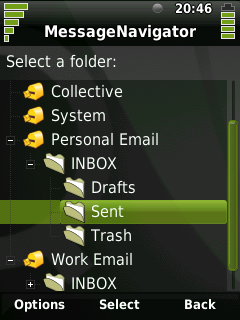

|
Home · All Namespaces · All Classes · Grouped Classes · Modules · Functions | |
Files:
The MessageNavigator example shows how to create a Qt Extended application which displays messages stored by the Qt Extended Messaging library. The example application allows the user to browse for messages using a tree view to expose the hierarchical structure of email accounts that use folders. It displays the messages in each folder in a list, and when a message is selected, it uses Qt Extended services to delegate the display of the message to another application.

The application is structured as a stack of widgets, contained by a QStackedWidget. We need two widgets in our stack: one to select a folder from a tree, and another to select a message from a list.
The example application uses the Qt Extended Messaging library's QMailMessageSetModel class to build a model of the messages in the Qt Extended mail store. It divides all the messages into groups, first by the account to which they belong, and within an account, by the folder where they are located. This task is performed by subclassing the QMailMessageSetModel class to create our FolderModel class:
class FolderModel : public QMailMessageSetModel
{
Q_OBJECT
public:
explicit FolderModel(QObject* parent = 0);
virtual ~FolderModel();
virtual QVariant data(QMailMessageSet* item, int role, int column) const;
};
The base class is specialized in two ways. The content of the model is determined by adding the necessary items in the constructor, and the data elements that are displayed for each item are augmented with an icon by overriding the data function.
The content of the model is configured by appending the items we want to display to the model, in the constructor. To the empty model, we successively append a new QMailAccountMessageSet item for each account in the mail store:
FolderModel::FolderModel(QObject *parent)
: QMailMessageSetModel(parent)
{
// Add an entry for each account, that will maintain its own tree of folders
foreach (const QMailAccountId &id, QMailStore::instance()->queryAccounts())
append(new QMailAccountMessageSet(this, id, true));
}
The QMailAccountMessageSet class represents a message set defined by selecting all messages associated with the account the item is configured with. The constructor for QMailAccountMessageSet takes a parent container to which it should be appended, and the identifier of the account that it should represent. It also takes a third parameter, which is used to specify the optional hierarchical property. If hierarchical is true, then the QMailAccountMessageSet class will automatically maintain a tree of QMailFolderMessageSet items as child items, corresponding to the folders belonging to the relevant account in the mail store. This determines the entire content of our model.
In order to customize the display of the items in our tree view, the FolderModel class overrides the data function of QMailMessageSetModel and provides data for the Qt::DecorationRole value used by QtopiaItemDelegate:
QVariant FolderModel::data(QMailMessageSet* item, int role, int column) const
{
if (role == Qt::DecorationRole) {
if (qobject_cast<QMailAccountMessageSet*>(item)) {
// This item is an account message set
return QIcon(":icon/qtmail/account");
} else {
// This item is a folder message set
return QIcon(":icon/folder");
}
} else {
return QMailMessageSetModel::data(item, role, column);
}
}
For our application, we create a FolderSelector widget which uses a QTreeView to present our folder model:
class FolderSelector : public QWidget
{
Q_OBJECT
public:
FolderSelector(QWidget* parent = 0)
: QWidget(parent),
label(new QLabel),
treeView(new QTreeView)
{
label->setText(tr("Select a folder:"));
treeView->setModel(&model);
treeView->setItemDelegate(new QtopiaItemDelegate(this));
treeView->setSelectionMode(QAbstractItemView::SingleSelection);
treeView->header()->setVisible(false);
treeView->installEventFilter(this);
connect(treeView, SIGNAL(activated(QModelIndex)), this, SLOT(activated(QModelIndex)));
QVBoxLayout* layout = new QVBoxLayout(this);
layout->addWidget(label);
layout->addWidget(treeView);
}
signals:
void folderSelected(const QMailMessageSet* folder);
void done();
protected slots:
void activated(const QModelIndex& index);
protected:
virtual bool eventFilter(QObject* obj, QEvent* event);
private:
FolderModel model;
QLabel* label;
QTreeView* treeView;
};
When we select an item from the tree view, we extract the QMailMessageSet object represented by the selected item, and emit that data to our MessageSelector object:
void FolderSelector::activated(const QModelIndex& index)
{
emit folderSelected(model.itemFromIndex(index));
}
Once we have selected a message set, we will display a listing of the messages defined by that message set. For this, we need a stackable widget to list messages.
The MessageSelector uses a QListView to present a listing of messages associated with a specific contact. To do this, we need to create a model of message data that the QListView will present. Our class therefore contains a QMailMessageListModel object, and a QMailMessageDelegate object, whose responsibility is to render each element in the list view using the data of each message.
class MessageSelector : public QWidget
{
Q_OBJECT
public:
MessageSelector(QWidget* parent = 0)
: QWidget(parent),
label(new QLabel),
listView(new QListView),
delegate(new QMailMessageDelegate(QMailMessageDelegate::AddressbookMode, this))
{
label->setWordWrap(true);
listView->setModel(&model);
listView->setItemDelegate(delegate);
listView->setSelectionMode(QAbstractItemView::SingleSelection);
listView->installEventFilter(this);
connect(listView, SIGNAL(activated(QModelIndex)), this, SLOT(activated(QModelIndex)));
QVBoxLayout* layout = new QVBoxLayout(this);
layout->addWidget(label);
layout->addWidget(listView);
}
signals:
void listPrepared();
void messageSelected(const QMailMessageId& id);
void done();
public slots:
void listMessages(const QMailMessageSet* folder);
protected slots:
void activated(const QModelIndex& index);
protected:
virtual bool eventFilter(QObject* obj, QEvent* event);
private:
QMailMessageListModel model;
QLabel* label;
QListView* listView;
QMailMessageDelegate* delegate;
};
Now that we have widgets to display our folder model and a message list, we simply need to connect them together:
MessageNavigator::MessageNavigator(QWidget *parent, Qt::WFlags f)
: QWidget(parent, f),
folderSelector(new FolderSelector),
messageSelector(new MessageSelector)
{
setupUi(this);
// Connect our components
connect(folderSelector, SIGNAL(folderSelected(const QMailMessageSet*)), messageSelector, SLOT(listMessages(const QMailMessageSet*)));
connect(folderSelector, SIGNAL(done()), qApp, SLOT(quit()));
connect(messageSelector, SIGNAL(listPrepared()), this, SLOT(showMessageList()));
connect(messageSelector, SIGNAL(messageSelected(QMailMessageId)), this, SLOT(viewMessage(QMailMessageId)));
connect(messageSelector, SIGNAL(done()), this, SLOT(showFolderTree()));
widgetStack->addWidget(folderSelector);
widgetStack->addWidget(messageSelector);
QVBoxLayout* layout = new QVBoxLayout(this);
layout->addWidget(widgetStack);
showFolderTree();
}
void MessageNavigator::showFolderTree()
{
widgetStack->setCurrentWidget(folderSelector);
}
When we have a folder selected from our folder tree, we create a list of messages corresponding to that folder. The QMailMessageListModel provides the setKey() function, which allows the caller to specify the messages to be listed by providing a QMailMessageKey object that selects them from the mail store. We can use the messageKey() function of the QMailMessageSet object selected in the FolderSelector to acquire a message key for our model:
void MessageSelector::listMessages(const QMailMessageSet* folder)
{
model.setKey(folder->messageKey());
if (model.isEmpty()) {
label->setText(tr("No messages in %1").arg(folder->displayName()));
} else {
listView->selectionModel()->select(model.index(0, 0), QItemSelectionModel::Select);
listView->scrollToTop();
label->setText(tr("Select a message to view the content:"));
}
emit listPrepared();
}
When the message list has been prepared, we move our message list to the top of the widget stack, in MessageNavigator::showMessageList():
void MessageNavigator::showMessageList()
{
widgetStack->setCurrentWidget(messageSelector);
}
Finally, we handle the event where the user selects a message from our list. Rather than displaying the message ourself, we will use the QtopiaServiceRequest mechanism to request that another application handle this task for us. The Messages service exports a viewMessage function, which takes a QMailMessageId object as a parameter; we respond to the user's selection by invoking this service with the identifier of the message that they selected:
void MessageNavigator::viewMessage(const QMailMessageId& id)
{
// Request that some application display the selected message
QtopiaServiceRequest req( "Messages", "viewMessage(QMailMessageId)" );
req << id;
req.send();
}
See also MessageViewer Example.
| Copyright © 2009 Trolltech | Trademarks | Qt Extended 4.4.3 |